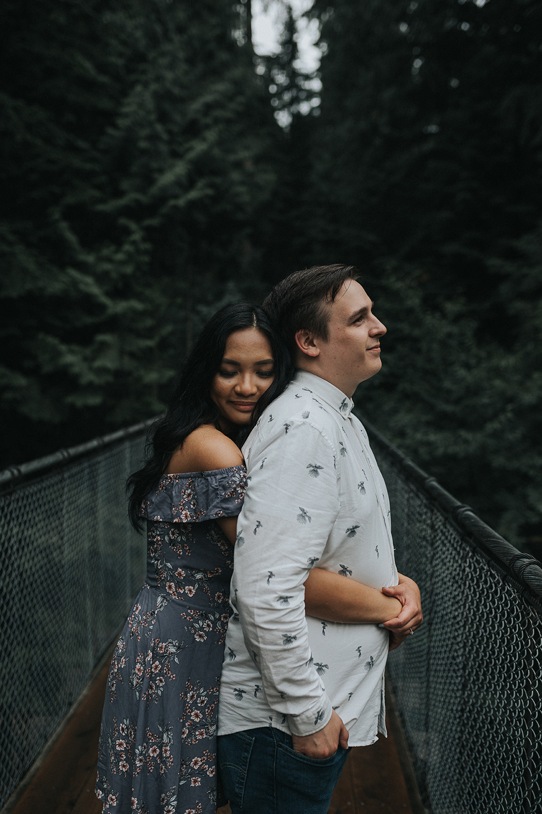

<!-- Our Story -->
<section class="wrapper style1 fullscreen fade-up">
	<div class="inner">
        <div class="row gtr-uniform">
            <div class="col-6">
                <h1>Our Story</h1>
                <p>In the autumn of 2015, Jo Ann Muyco joined the staff of PLBC as the new coffee shop barista. I remember looking up and going, “You’re not Lorraine”. And from there a bond was formed.</p>
                <p>For weeks I would go down to the shop for coffee, snacks, and unnecessary amounts of oranges; for an unnecessary number of times a day. I piqued her interest, and on October 13th we went on our first date!</p>
                <p>We decided at first to keep things casual. We didn’t know what this was and there was no rush to get married. It had its ups and downs. A few months in we called it quits even; but I was persistent, and we never lost touch. For about a year and a half we kept things casual like this, but I eventually wore her down, and we made our relationship official January 4th, 2017. </p>
                <p>This moment was long anticipated, and so naturally only a few months later I had put together the plans to have an engagement ring made for her, and by the end of the year the ring was ready for me and I knew I needed to move fast because my idiot friends were getting close to blowing this secret ring business for me.</p>
                <p>New Years Eve the same year we went on a fancy date with fancy clothes and fancy meats and fancy fireworks. I knew in my heart this was the night, I had known for a long time that this was the girl. We got out to Stanley Park, walked down to see the fireworks over the city, and as everyone dispersed into the new year, I got on one knee and asked her to be my wife. </p>

                <ul class="actions">
                    <li><a href="#/" class="button scrolly primary">Wedding Info</a></li>
                    <li><a href="#/rsvp" class="button scrolly">RSVP For Reception</a></li>
                    <li><a href="#/gifts" class="button scrolly">Gift Ideas</a></li>
                </ul>
            </div>

            <div class="col-6">
                <span class="image right" style="max-width: 100%"></span>
            </div>
        </div>

	</div>
</section>